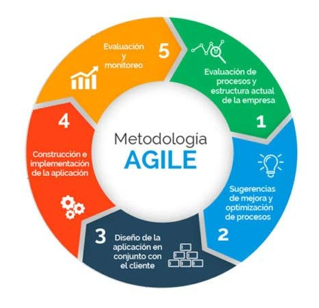
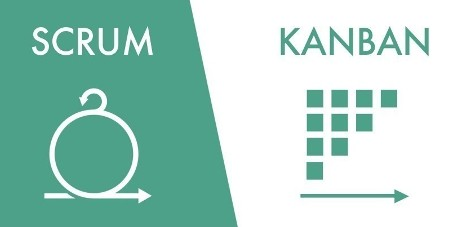

Business Executive
Experto en politicas públicas.
Scrum Master
Responsable de procesos y manejo del equipo.
Business Executive
Experto en politicas públicas.
Product Owner
Responsable del producto.
Developer
Desarrollo e implementación.
Uso de Metodologías Ágiles. |
 |
Uso de Scrum y Kanban. |
 |